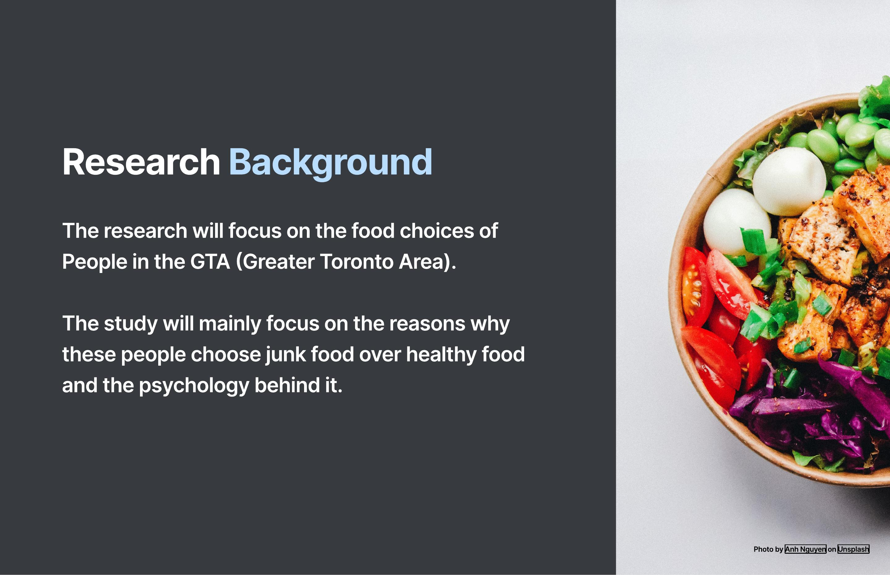
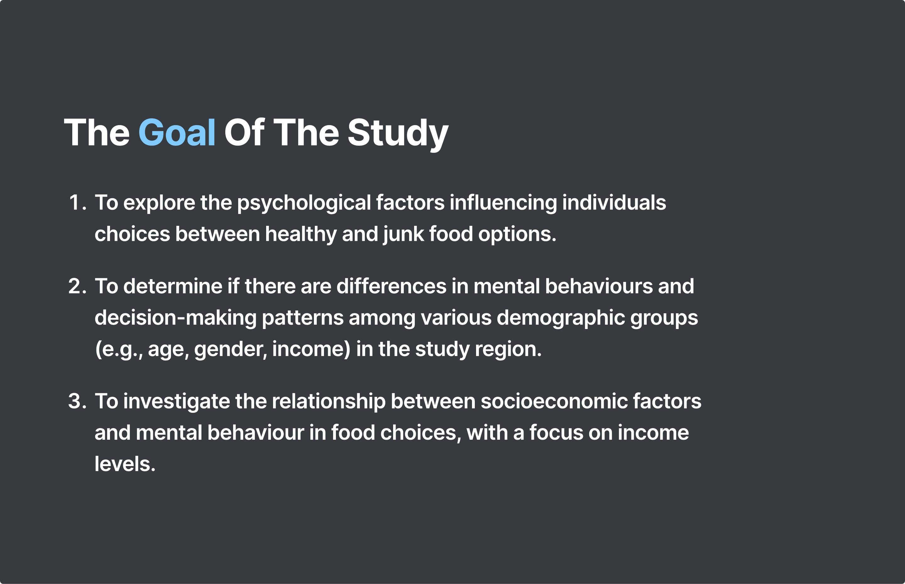
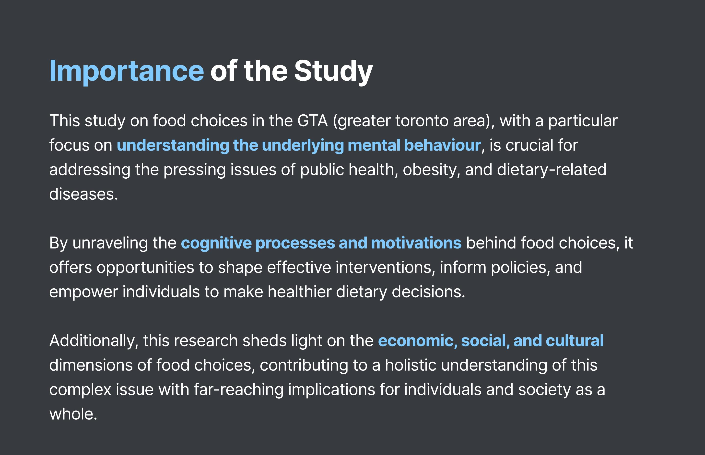
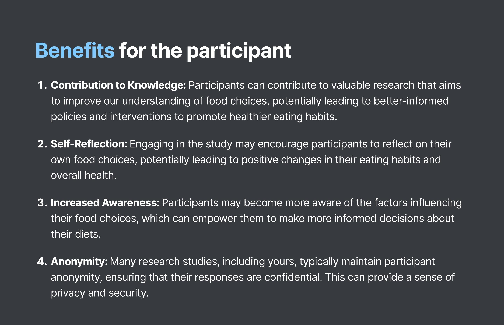

Food Choices Insights — research outputs
A qualitative research study exploring why students in the GTA choose junk food over healthy food, uncovering the psychological, social, and cultural forces that drive everyday food decisions.
Why do people, especially college students in the GTA consistently choose junk food over healthy options, even when they know better? This question sounds simple. The answer is anything but.
Food sits at the intersection of psychology, culture, economics, social dynamics, and identity. Understanding food choices is really about understanding how people navigate competing pressures, values, and habits in real time. For designers, that's a rich and underexplored space.
This was a User-Centred Research Methods course project at Sheridan College, conducted as a four-person team with proper ethics review, informed consent, and structured methodology.
Explore the psychological factors influencing individual choices between healthy and junk food options.
Determine if there are differences in decision-making patterns across demographic groups; age, gender, and income.
Investigate the relationship between socioeconomic factors and food choices, with a specific focus on income levels.
Understand how advertising, social influence, and emotional well-being shape what people eat and when.
Before running our own interviews, we conducted a thorough literature review to ground our assumptions in existing research. Key findings from secondary sources:


Advertisements and media engagement for junk food products increases the likelihood of individuals choosing junk food.
Junk food is a form of comfort for individuals, which in turn influences their food choices in stressful or emotional moments.
Friends and family have an influence that plays a role in individuals' decisions to eat junk food; eating is social.
People are drawn to junk food because of its taste — and because healthy options often don't compete on that front.
Individuals choose junk food over healthy options because it is more convenient and more readily available, especially for time-pressured students.
We chose qualitative interviews as our method because we wanted to understand the why behind food choices and not just the what. Surveys would have given us numbers. Interviews gave us stories, contradictions, and the unfiltered reasoning people actually use.
All interview questions were open-ended. We deliberately avoided leading questions or judgment. The goal was to hear, not to confirm what we already suspected.
Participant criteria:
Interviews took place in booked silent rooms on campus. Sessions were audio/video recorded with full informed consent. All data was stored on an encrypted online drive accessible only to the research team and faculty. Budget: $50 for stationery and data storage.


When time is short, health intentions collapse. Students consistently chose the fastest option, not the healthiest one.
Food choices shifted dramatically based on who participants were eating with. Group meals were governed by completely different logic than solo meals.
Stressful periods like exams, deadlines, relationship problems, e.t.c reliably triggered junk food choices. Food as emotional regulation was a consistent pattern.
Healthy food was perceived as more expensive, even when it wasn't always. Perception drove behaviour as much as reality.
This research wasn't tied to a specific product brief but the findings point clearly toward how food-related digital experiences could better serve users:
This was one of my first experiences with formal, ethics-reviewed research and it changed how I approach all research, not just academic projects. The consent process, the participant criteria, the data handling, these aren't bureaucratic boxes to tick. They're what separates research that actually respects people from research that just extracts from them.
The hardest skill I practised here was restraint. Letting participants finish their thoughts without steering them. Sitting with an answer that challenged my hypothesis instead of finding a way to dismiss it. That discipline is what makes qualitative research genuinely valuable and it's something I bring into every user interview I run now.